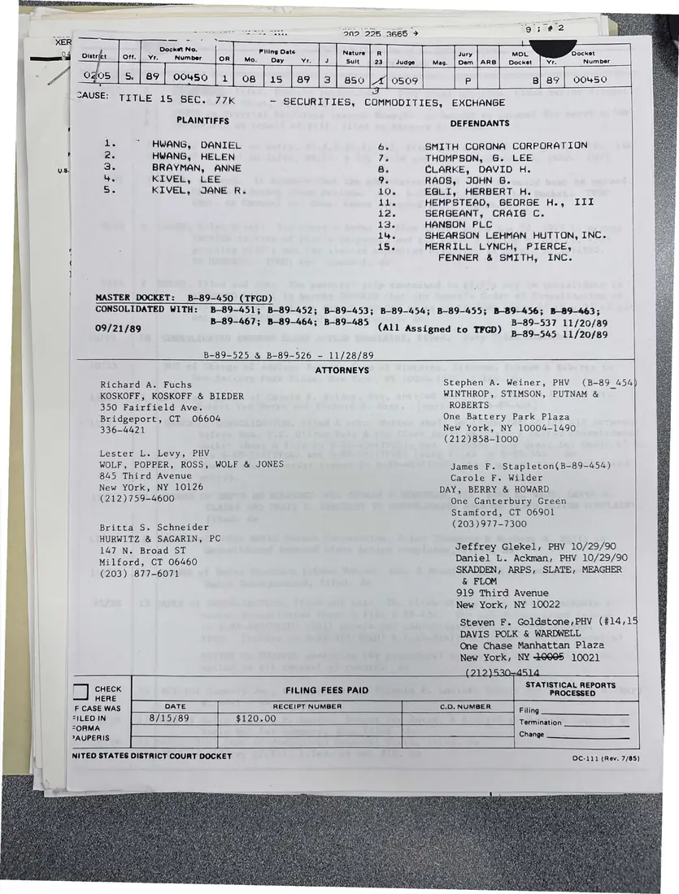
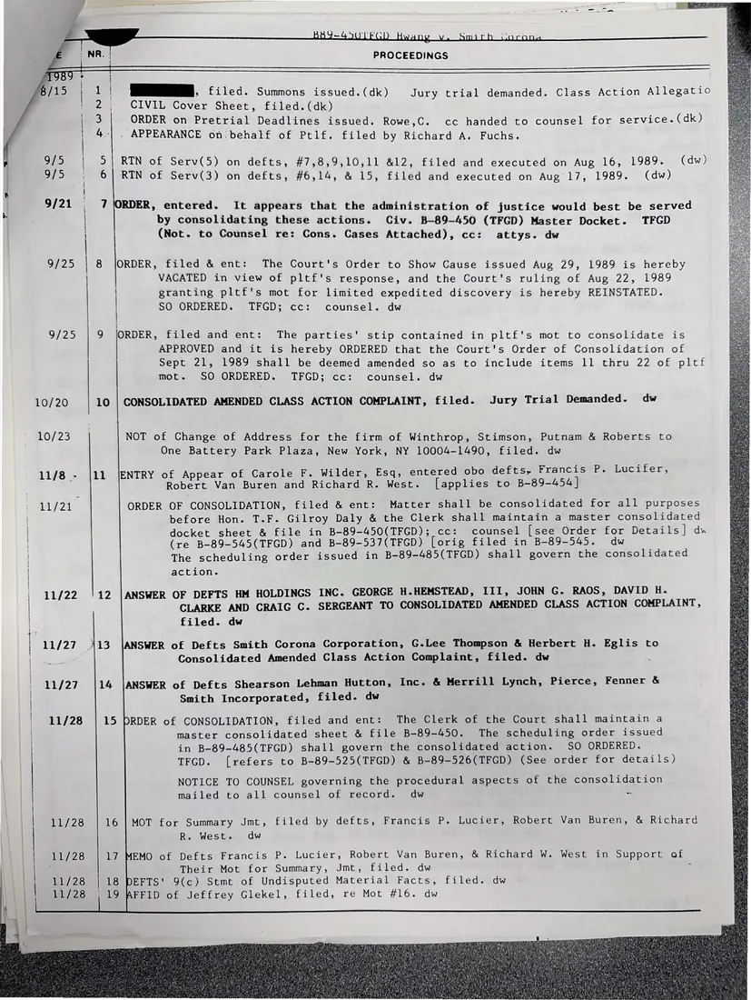
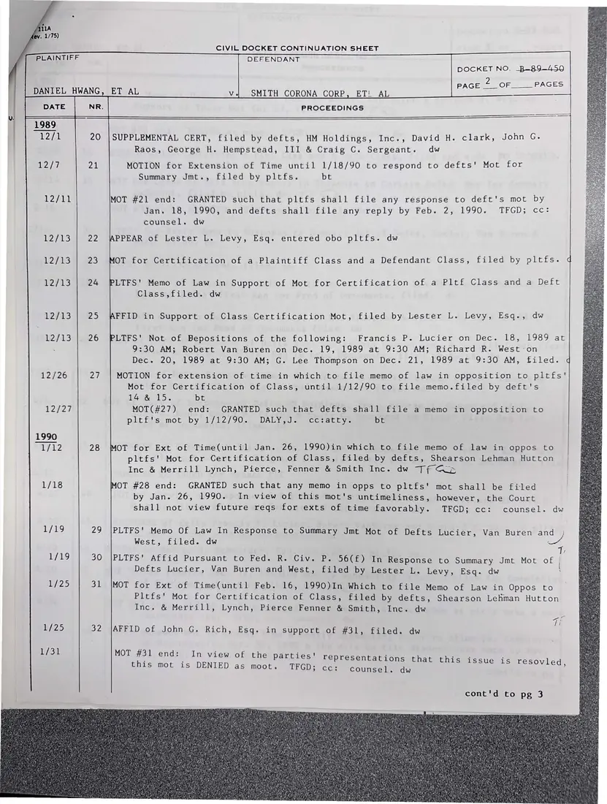
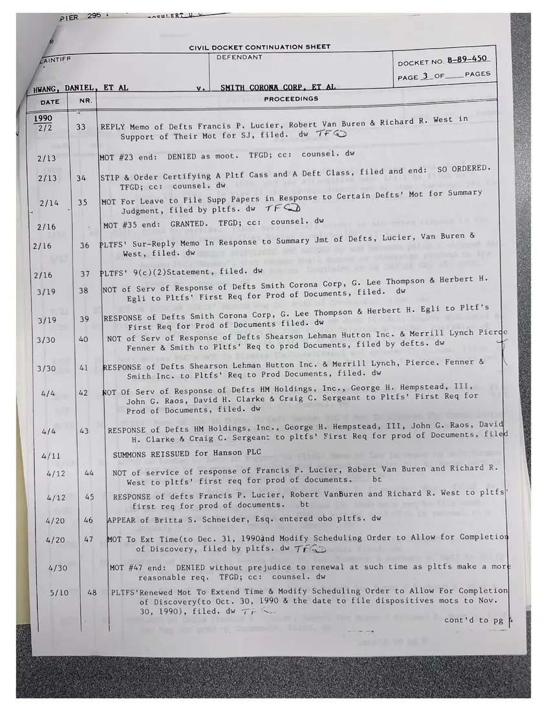
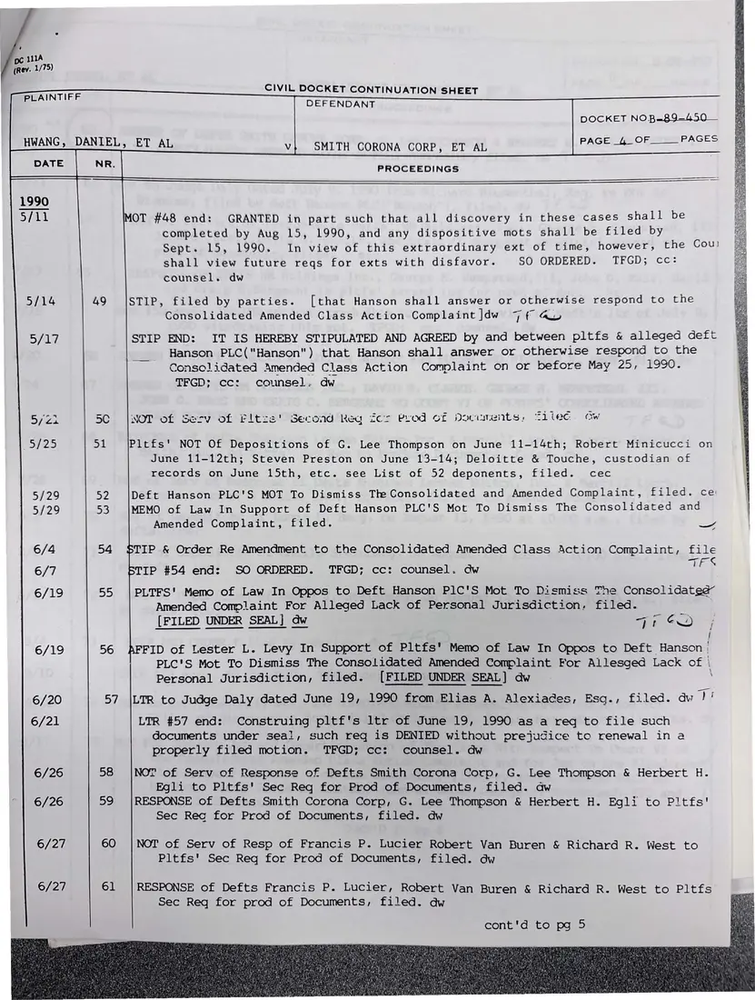
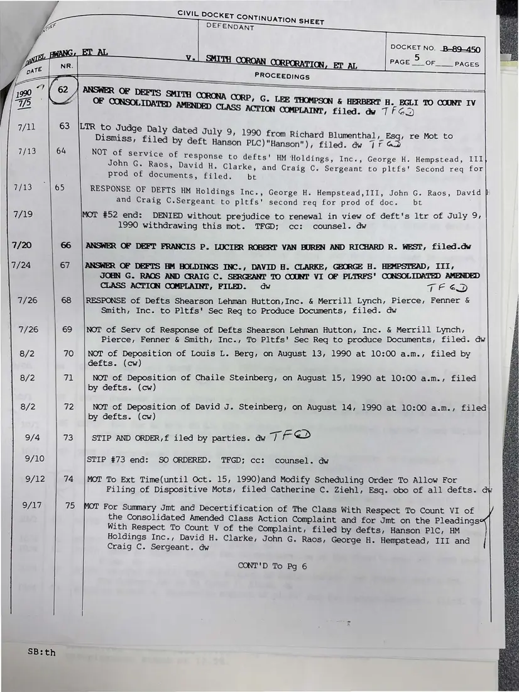
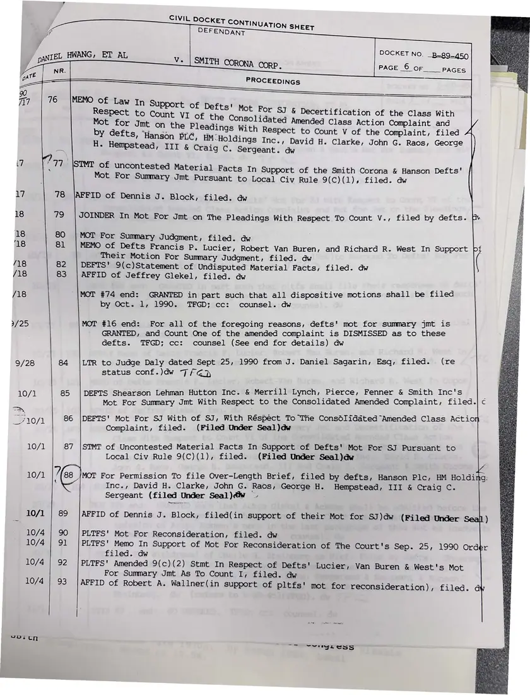
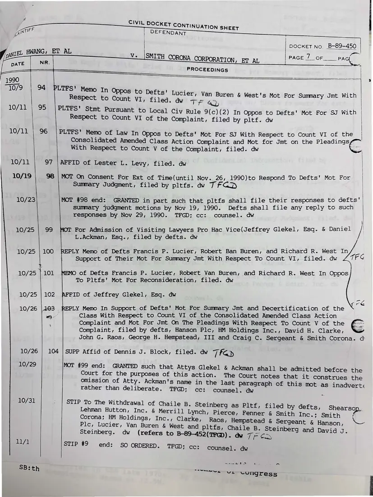
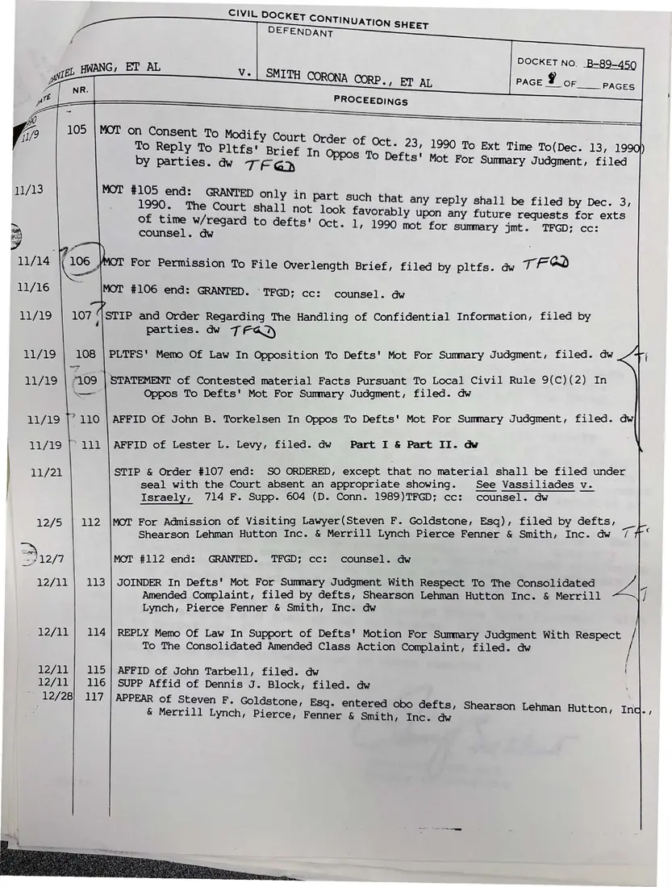

Report, 9 pages
Docket sheets in Hwang v. Smith Corona Corp. (securities class action)
1989–1990
Copies of the federal civil docket in a shareholders' class action against Smith Corona and others (docket B-89-450), listing filings from 1989 into 1990. They were filed with the coalition's Smith Corona research.
Download or cite this itemPages


(open zoom view)Read the page text (machine-read, contains errors)
This text was generated automatically from the photograph and has not been corrected. The image is the authoritative record.
ee “30> 235 3665 > “XER woe L ; Docket No. Filing Date - r =| _Oistrfe t | Off. | ¥r.__Number OR| Mo. Onl vr | J raat 3 Judge Mag. ae ARB Boat Yr. a, 4 _ogos 3. | 89 | 00450 | 1] 08 | 15 | 89 13] B50 Lrloso9 P Bl a9 | 00450 _ CAUSE: ‘ : md TITLE 15 SEC. 77k - SECURITIES, COMMODITIES, EXCHANGE | PLAINTIFFS DEFENDANTS | 1. "HWANG, DANIEL bi SMITH CORONA CORPORATION | 2. HWANG, HELEN " THOMPSON, G. LEE ri 3. BRAYMAN, ANNE 8. CLARKE, DAVID H. 4. KIVEL, LEE 9. RAOS, JOHN G. 5. KIVEL, JANE R. 10. EGLI, HERBERT H. iin HEMPSTEAD, GEORGE H., III 12. SERGEANT, CRAIG C. 13. HANSON PLC 14. SHEARSON LEHMAN HUTTON, INC. 15. MERRILL LYNCH, PIERCE, FENNER & SMITH, INC. | MASTER DOCKET: B-89-450 (TFGD) CONSOLIDATED WITH: B-89-451; B-89-452; B-89-453; B-89-454; B-89-455; B-89-456; B-89-463; B-89-467; B-89-464; B-89-537 11/20/89 B-89-485 09/21/8 (All As PAU Signed to TFGD) p 39 545 11/20/89 B-89-525 & B-89-526 — 11/28/89 ATTORNEYS Richard A. Fuchs Stephen A. Weiner, PHV (B-89 454 KOSKOFF, KOSKOFF & BIEDER WINTHROP, STIMSON, PUTNAM & 350 Fairfield Ave. ROBERTS Bridgeport, CT 06604 One Battery Park Plaza 336-4421 New York, NY 10004-1490 (212)858-1000 Lester L. Levy, PHV WOLF, POPPER, ROSS, WOLF & JONES jemes Pe Stapleton(B-89-454) 845 Third Avenue Ceeole i. Walger New YOrk, NY 10126 DAY, BERRY & HOWARD (212)759-4600 One Canterbury Green Stamford, CT 06901 Britta S. Schneider (203 )977-7300 HURWITZ & SAGARIN, PC 147 N. Broad ST Jeffrey Glekel, PHV 10/29/90 Milford, CT 06460 Daniel L. Ackman, PHV 10/29/90 (203) 877-6071 SKADDEN, ARPS, SLATE, MEAGHER & FLOM 919 Third Avenue New York, NY 10022 Steven F. Goldstone,PHV (#14,15 DAVIS POLK & WARDWELL One Chase Manhattan Plaza New York, NY 40005 10021 (212)530-4514 STATISTICAL REPORTS i) BEES FILING FEES PAID PROCESSED F CASE WAS DATE RECEIPT NUMBER C.0, NUMBER Filing Ny oy o188 $120 200 Termination >AUPERIS Change 4 NITED STATES DISTRICT COURT DOCKET OC-111 (Rev. 7/85)


(open zoom view)Read the page text (machine-read, mostly readable)
This text was generated automatically from the photograph and has not been corrected. The image is the authoritative record.
BY9-4G5OTECH Hwang v. Smith Voreng PROCEEDINGS Ane /15 | a} WS. filed. Summons issued. (dk) Jury trial demanded. Class Action Allegatio ' 2, CIVIL Cover Sheet, filed. (dk) | 3 ORDER on Pretrial Deadlines issued. Rowe,C. cc handed to counsel for service. (dk) | 4 | . APPEARANCE on behalf of Ptlf. filed by Richard A. Fuchs. 9/5 | 5| RIN of Serv(5) on defts, #7,8,9,10,11 &12, filed and executed on Aug 16, 1989. (dw) 9/5 6| RTN of Serv(3) on defts, #6,14, & 15, filed and executed on Aug 17, 1989. (dw) 9/21 7 ORDER, entered. It appears that the administration of justice would best be served by consolidating these actions. Civ. B—89-450 (TFGD) Master Docket. TFGD j (Not. to Counsel re: Cons. Cases Attached), cc: attys. dw 9/25 | 8 |ORDER, filed & ent: The Court's Order to Show Cause issued Aug 29, 1989 is hereby VACATED in view of pltf's response, and the Court's ruling of Aug 22, 1989 granting pltf's mot for limited expedited discovery is hereby REINSTATED. SO ORDERED. TFGD; cc: counsel. dw 9/25 | 9 ORDER, filed and ent: The parties' stip contained in pltf's mot to consolidate is APPROVED and it is hereby ORDERED that the Court's Order of Consolidation of Sept 21, 1989 shall be deemed amended so as to include items 11 thru 22 of pltf mot. SO ORDERED. TFGD; cc: counsel. dw 10/20 10 | CONSOLIDATED AMENDED CLASS ACTION COMPLAINT, filed. Jury Trial Demanded. dw 10/23 NOT of Change of Address for the firm of Winthrop, Stimson, Putnam & Roberts to One Battery Park Plaza, New York, NY 10004-1490, filed. dw 11/8 - |11 |ENTRY of Appear of Carole F. Wilder, Esq, entered obo defts, Francis P. Lucifer, Robert Van Buren and Richard R. West. [applies to B-89-454] 11724 ORDER OF CONSOLIDATION, filed & ent: Matter shall be consolidated for all purposes before Hon. T.F. Gilroy Daly & the Clerk shall maintain a master consolidated docket sheet & file in B-89-450(TFGD); cc: counsel [see Order for Details] ds (re B-89-545(TFGD) and B-89-537(TFGD) [orig filed in B-89-545. dw The scheduling order issued in B-89-485(TFGD) shall govern the consolidated action. 11/22 12 |ANSWER OF DEFTS HM HOLDINGS INC. GEORGE H.HEMSTEAD, III, JOHN G. RAOS, DAVID H. CLARKE AND CRAIG C. SERGEANT TO CONSOLIDATED AMENDED CLASS ACTION COMPLAINT, filed. dw 11/27 413 |ANSWER of Defts Smith Corona Corporation, G.Lee Thompson & Herbert H. Eglis to Consolidated Amended Class Action Complaint, filed. dw 11/27 14 |ANSWER of Defts Shearson Lehman Hutton, Inc. & Merrill Lynch, Pierce, Fenner & Smith Incorporated, filed. dw 11/28 15 PRDER of CONSOLIDATION, filed and ent: The Clerk of the Court shall maintain a master consolidated sheet & file B-89-450. The scheduling order issued in B-89-485(TFGD) shall govern the consolidated action. SO ORDERED. TFGD. [refers to B-89-525(TFGD) & B-89-526(TFGD) (See order for details) NOTICE TO COUNSEL governing the procedural aspects of the consolidation mailed to all counsel of record. dw ~ 11/28 16 | MOT for Summary Jmt, filed by defts, Francis P. Lucier, Robert Van Buren, & Richard R. West. dw 11/28 17 MEMO of Defts Francis P. Lucier, Robert Van Buren, & Richard W. West in Support of Their Mot for Summary, Jmt, filed. dw : 11/28 18 DEFTS' 9(c) Stmt of Undisputed Material Facts, filed. dw 11/28 ae AFFID of Jeffrey Glekel, filed, re Mot #16. dw


(open zoom view)Read the page text (machine-read, mostly readable)
This text was generated automatically from the photograph and has not been corrected. The image is the authoritative record.
CIVIL DOCKET CONTINUATION SHEET PLAINTIFF DEFENDANT DOCKET NO. B-~89-450 RPAGES=sOr PAGES DANIEL HWANG, ET AL v._ SMITH CORONA CORP, ET! AL DATE NR. PROCEEDINGS 1989 WAHL 20 |SUPPLEMENTAL CERT, filed by defts, HM Holdings, Inc., David H. clark, John G. Raos, George H. Hempstead, III & Craig C. Sergeant. dw 12/7 2) MOTION for Extension of Time until 1/18/90 to respond to defts' Mot for Summary Jmt., filed by pltfs. bt P27 MOT #21 end: GRANTED such that pltfs shall file any response to deft's mot by Jan. 18, 1990, and defts shall file any reply by Feb. 2, 1990. TFGD; cc: counsel. dw 12/13 | 22 \APPEAR of Lester L. Levy, Esq. entered obo pltfs. dw 27 a3 23 MOT for Certification of a Plaintiff Class and a Defendant Class, filed by pltfs. q 12/13 | 24 PLTFS' Memo of Law in Support of Mot for Certification of a Pltf Class and a Deft Class,filed. dw 12/13 25 AFFID in Support of Class Certification Mot, filed by Lester L. Levy, Esq., dw 12/13 | 26 PLTFS' Not of Depositions of the following: Francis P. Lucier on Dec. 18, 1989 at : 9:30 AM; Robert Van Buren on Dec. 19, 1989 at 9:30 AM; Richard R. Weston Dec. 20, 1989 at 9:30 AM; G. Lee Thompson on Dec. 21, 1989 at 9:30 AM, filed. q 12/26 27 | MOTION for extension of time in which to file memo of law in opposition to pltfs' Mot for Certification of Class, until 1/12/90 to file memo.filed by deft's 14 & 15. bt 12727 MOT(#27) end: GRANTED such that defts shall file a memo in opposition to pltits mot by 1/12/90 -. sDALY mC ia tity. bt 1990 1/42 28 MOT for Ext of Time(until Jan. 26, 1990)in which to file memo of law in oppos to pltfs' Mot for Certification of Class, filed by defts, Shearson Lehman Hutton Inc & Merrill Lynch, Pierce, Fenner & Smith Inc. dw Tf Qo 1/18 MOT #28 end: GRANTED such that any memo in opps to pltfs' mot shall be filed by Jan. 26, 1990. In view of this mot's untimeliness, however, the Court shall not view future reqs for exts of time favorably. TFGD; cc: counsel. dw 1/19 29 |PLTFS' Memo Of Law In Response to Summary Jmt Mot of Defts Lucier, Van Buren and West, filed. dw 4 IVA) 30 |PLTFS' Affid Pursuant to Fed. R. Civ. P. 56(f) In Response to Summary Jmt Mot of | Defts Lucier, Van Buren and West, filed by Lester L. Levy, Esq. dw ‘ 25 31 |MOT for Ext of Time(until Feb. 16, 1990)In Which to file Memo of Law in Oppos to Pltfs' Mot for Certification of Class, filed by defts, Shearson Lehman Hutton Inc. & Merrill, Lynch, Pierce Fenner & Smith, Inc. dw 1/25 32 |AFFID of John G. Rich, Esq. in support of #31, filed. dw 1/30) MOT #31 end: In view of the parties' representations that this issue is resovl d, this mot is DENIED as moot. TFGD; cc: counsel. dw yay cont'd to pg 3


(open zoom view)Read the page text (machine-read, mostly readable)
This text was generated automatically from the photograph and has not been corrected. The image is the authoritative record.
Bier i295.2 SaeuLERTORe———— CIVIL DOCKET CONTINUATION SHEET AINTIFF DEFENDANT 3 DOCKET NO. 2= 9-450 | PAGER SH Of = ACES HWANG, DANIEL, ET AL v. | SMITH CORONA CORP, ET AL \/| pate NR. PROCEEDINGS Tees 1990 é 2/2 33 |REPLY Memo of Defts Francis P. Lucier, Robert Van Buren & Richard R. West in Support of Their Mot for SJ, filed. dw TF a> 2/13 MOT #23 end: DENIED as moot. TFGD; cc: counsel. dw 2/13 34 ISTIP & Order Certifying A Pltf Cass and A Deft Class, filed and end: SO ORDERED. TFGD; cc: counsel. dw 2/14 35 |MOT For Leave to File Supp Papers in Response to Certain Defts' Mot for Summary Zz c Judgment, filed by pltfs. dw TED 2/16 . |mMot #35 end: GRANTED. TFGD; cc: counsel. dw 2/16 36 PLTFS' Sur-Reply Memo In Response to Summary Jmt of Defts, Lucier, Van Buren & West, filed. dw . 2/16 37 PLTFS' 9(c)(2)Statement, filed. dw 3/19 38 NOT of Serv of Response of Defts Smith Corona Corp, G. Lee Thompson & Herbert H. Egli to Pltfs' First Req for Prod of Documents, filed. dw G. Lee Thompson & Herbert H. Egli to Pltf's 3/19 39 RESPONSE of Defts Smith Corona Corp, First Req for Prod of Documents filed. dw 3/30 40 NOT of Serv of Response of Defts Shearson Lehman Hutton Inc. & Merrill Lynch Pierde Fenner & Smith to Pltfs' Req to prod Documents, filed by defts. dw a 3/30 41 RESPONSE of Defts Shearson Lehman Hutton Inc. & Merrill Lynch, Pierce, Fenner & Smith Inc. to Pltfs' Req to Prod Documents, filed. dw 4/4 42 NOT Of Serv of Response of Defts HM Holdings, Inc., George H. Hempstead, III, John G. Raos, David H. Clarke & Craig C. Sergeant to Pltfs' First Req for Prod of Documents, filed. dw 4/4 43 RESPONSE of Defts HM Holdings, Inc., George H. Hempstead, III, John G. Raos, David H. Clarke & Craig C. Sergeant to pltfs' First Req for prod of Documents, filed 4/11 SUMMONS REISSUED for Hanson PLC 4/12 44 NOT of service of response of Francis P. Lucier, Robert Van Buren and Richard R. West to pltfs' first req for prod of documents. bt 4/12 45 RESPONSE of defts Francis P. Lucier, Robert VanBuren and Richard R. West to pltfs|' first req for prod of documents. bt 4/20 46 |APPEAR of Britta $. Schneider, Esq. entered obo pltfs. dw 4/20 47 MOT To Ext Time(to Dec. 31, 1990and Modify Scheduling Order to Allow for Completioy of Discovery, filed by pltfs. dw 7TFQD 4/30 MOT #47 end: DENIED without prejudice to renewal at such time as pltfs make a more reasonable req. TFGD; cc: counsel. dw 5/0 48 PLTFS'Renewed Mot To Extend Time & Modify Scheduling Order to Allow For Completion of Discovery(to Oct. 30, 1990 & the date to file dispositives mots to Nov. 30, 1990), filed. dw Py “-- | cont'd to pg kh @


(open zoom view)Read the page text (machine-read, mostly readable)
This text was generated automatically from the photograph and has not been corrected. The image is the authoritative record.
111A
(rev. 1/75)
CIVIL DOCKET CONTINUATION SHEET
Pe IATAUDRE DEFENDANT
DOCKET NOB-89—-450 —
AGES
HWANG, DANIEL, ET AL v} SMITH CORONA CORP, ET AL PAGEL ON
Stu he PROCEEDINGS
1990
5/01 MOT #48 end: GRANTED in part such that all discovery in these cases shall be
completed by Aug 15, 1990, and any dispositive mots shall be filed by
Sept. 15, 1990. In view of this extraordinary ext of time, however, the Cou!
shall view future reqs for exts with disfavor. SO ORDERED. TFGD; cc:
counsel. dw
5/14 49 |STIP, filed by parties. [that Hanson shall answer or otherwise respond to the
Consolidated Amended Class Action Complaint ]dw TF av
3) AMY STIP END: IT IS HEREBY STIPULATED AND AGREED by and between pltfs & alleged deft
___. Hanson PLC("Hanson") that Hanson shall answer or otherwise respond to the
Consolidated Amended Class Action Complaint on or before May 25, 1990.
TFGD; cc: counsel. dw
5/ Za 5C [NOT of Serv of Fltzs' Second Req zor Prod of Ascuments, Tilec. cw
5/25 51 |Pltfs' NOT Of Depositions of G. Lee Thompson on June 11-14th; Robert Minicucci on
June 11-12th; Steven Preston on June 13-14; Deloitte & Touche, custodian of
records on June 15th, etc. see List of 52 deponents, filed. cec
5/29 52 |Deft Hanson PLC'S MOT To Dismiss Tte Consolidated and Amended Complaint, filed. ce
5/29 53 |MEMO of Law In Support of Deft Hanson PLC'S Mot To Dismiss The Consolidated and
Amended Complaint, filed. ¥e
6/4 54 $TIP & Order Re Amendment to the Consolidated Amended Class Action Complaint, file
6/7 BTIP #54 end: SO ORDERED. TFGD; cc: counsel. dw eS
6/19 55 |PLTFS' Memo of Law In Oppos to Deft Hanson P1C'S Mot To Dismiss The Consolidateda@
Amended Complaint For Alleged Lack of Personal Jurisdiction, filed.
[FILED UNDER SEAL] dw ec
6/19 56 AFFID of Lester L. Levy In Support of Pltfs' Memo of Law In Oppos to Deft Hanson |
PLC'S Mot To Dismiss The Consolidated Amended Complaint For Allesged Lack of |
Personal Jurisdiction, filed. [FILED UNDER SEAL] dw :
6/20 57 |LTR to Judge Daly dated June 19, 1990 from Elias A. Alexiades, Esq., filed. aw bs
6/21 LTR #57 end: Construing pltf's ltr of June 19, 1990 as a req to file such
documents under seal, such req is DENIED without prejudice to renewal in a
properly filed motion. TFGD; cc: counsel. dw
6/26 58 |NOT of Serv of Response of Defts Smith Corona Corp, G. Lee Thompson & Herbert H.
Egli to Pltfs' Sec Req for Prod of Documents, filed. dw
6/26 59 |RESPONSE of Defts Smith Corona Corp, G. Lee Thompson & Herbert H. Egli to Pitfs'
Sec Reo for Prod of Documents, filed. dw
6/27 60 |NOT of Serv of Resp of Francis P. Lucier Robert Van Buren & Richard R. West to
Pltfs' Sec Req for Prod of Documents, filed. dw
6/27 61 |RESPONSE of Defts Francis P. Lucier, Robert Van Buren & Richard R. West to Pltfs
Sec Req for prod of Documents, filed. dw
cont'd to pg 5

(open zoom view)Read the page text (machine-read, mostly readable)
This text was generated automatically from the photograph and has not been corrected. The image is the authoritative record.
CIVIL DOCKET CONTINUATIO DEFENDANT N SHEET a ee DOCKET NO. _B-§9-450 , ET AL are | NR SMITH COROAN CORPORATION, ET Ar PAGE —OF____ PAGES D “ PROCEEDINGS Zi 62 / ANSWER OF 1990 DEFTS SMITH CORONA i OF CONSOLIDATED AMENGOS CORP, G. LEE THOMPSON & HERBERT H. EGLI TO COUNT IV Les CLASS ACTION COMPLAINT, filed. dw 7 FED Typ 63 |LTR to Judge D, ; pigiea ers dated July 9, 1990 from Richard Blumenthal, Esq, re Mot to 1 Tiled by deft Hanson PLC)"Hanson"), filed. dw 17 @2D 13 64 N i al Bae ce of Fesponse to defts' HM Holdings, Inc., George H. Hempstead, III + Raos, David H. Clarke, and Craig C. Sergeant to pltfs' Second req for prod of documents, filed. bt 7/13 65 RESPONSE OF DEFTS HM Holdings Inc., George H. Hempstead,III, John G. Raos, David |} and Craig C.Sergeant to pltfs' second req for prod of doc. bt 7/19 MOT #52 end: DENIED without prejudice to renewal in view of deft's ltr of July 9, 1990 withdrawing this mot. TFGD; cc: counsel. dw 7/20 66 | ANSWER OF DEFT FRANCIS P. LUCIER ROBERT VAN BUREN AND RICHARD R. WEST, filed.dw 7/24 67 ANSWER OF DEFTS HM HOLDINGS INC., DAVID H. CLARKE, GEORGE H. HEMPSTEAD, III, JOHN G. RAOS AND CRAIG C. SERGEANT TO COUNT VI OF PLTRFS' CONSOLIDATED AMENDED CLASS ACTION COMPLAINT, FILED. dw PE OD 7/26 68 RESPONSE of Defts Shearson Lehman Hutton,Inc. & Merrill Lynch, Pierce, Fenner & Smith, Inc. to Pltfs' Sec Req to Produce Documents, filed. dw 7/26 69 |NOT of Serv of Response of Defts Shearson Lehman Hutton, Inc. & Merrill Lynch, Pierce, Fenner & Smith, Inc., To Pltfs' Sec Req to produce Documents, filed. dw 8/2 70 |NOT of Deposition of Louis L. Berg, on August 13, 1990 at 10:00 a.m., filed by defts. (cw) 8/2 71 NOT of Deposition of Chaile Steinberg, on August 15, 1990 at 10:00 a.m., filed by defts. (cw) 8/2 72 NOT of Deposition of David J. Steinberg, on August 14, 1990 at 10:00 a.m., filed by defts. (cw) 9/4 73 | STIP AND ORDER,f iled by parties. aw 7) / <> 9/10 STIP #73 end: SO ORDERED. TFGD; cc: 9/12 74 counsel. dw MOT To Ext Time(until Oct. 15, 1990)and Modify Scheduling Order To Allow For Filing of Dispositive Mots, filed Catherine C. Ziehl, Esq. obo of all defts. dy DAT, 75 MOT For Summary Jmt and Decertification of The Class With Respect To Count VI of the Consolidated Amended Class Action Complaint and for Jmt on the Pleadings With Respect To Count V of the Complaint, filed by defts, Hanson PIC, HM | Holdings Inc., David H. Clarke, John G. Raos, George H. Hempstead, III and | Craig C. Sergeant. dw CONT'D To Pg 6 SB:th


(open zoom view)Read the page text (machine-read, mostly readable)
This text was generated automatically from the photograph and has not been corrected. The image is the authoritative record.
ee ONTINUATION Sire J DEFENDANT vy) ocr ne es y DOCKET NO. _B-g9--450 EL HWANG, ET AL Vv. Lie NR +2 LSEETH CORONA CORP. PAGE © oF paces “gate PROC ee EEDINGS 7i7_ | 76 |MEMO of Law In Support of ' 4 Respect to Reine VI aay a For SJ & Decertification of the Class With / Mot for Jmt on the Pi the Consolidated Amended Class Action Complaint and Vi by defts, "tiangon pre eadings With Respect to Count V of the Complaint, filea A : H. H 7 manson ELC, HM-Holdings Inc., David H. Clarke, John G. Raos, George a os ~ Hempstead, III & Craig C. Sergeant. dw 7 7 d 77 \SIMT of uncontested Material Facts In Support of the Smith Corona & Hanson Defts' Mot For Summary Jmt Pursuant to Local Civ Rule 9(C)(1), filed. dw 17 78 |AFFID of Dennis J. Block, filed. dw 18 79 |JOINDER In Mot For Jmt on The Pleadings With Respect To Count V., filed by defts. py 18 80 | MOT For Summary Judgment, filed. dw 18 81 | MEMO of Defts Francis P. Lucier, Robert Van Buren, and Richard R. West In Support pf Their Motion For Summary Judgment, filed. dw /18 82 | DEFTS' 9(c)Statement of Undisputed Material Facts, filed. dw /18 83 | AFFID of Jeffrey Glekel, filed. dw /18 MOT #74 end: GRANTED in part such that all dispositive motions shall be filed by Oct. 1, 1990. TFGD; cc: counsel. dw 9/25 MOT #16 end: For all of the foregoing reasons, defts' mot for summary jmt is GRANTED, and Count One of the amended complaint is DISMISSED as to these defts. TFGD; cc: counsel (See end for details) dw 9/28 84 |LTR to Judge Daly dated Sept 25, 1990 from J. Daniel Sagarin, Esq, filed. (re status conf.)dw 7/ Gj 10/1 85 |DEFTS Shearson Lehman Hutton Inc. & Merrill Lynch, Pierce, Fenner & Smith Inc's : Mot For Summary Jmt With Respect to the Consolidated Amended Complaint, filed.|c 4 3 10/1 86 |DEFTS' Mot For SJ With of SJ, With Réspect To The Consolidated Amended Class Action * Complaint, filed. (Filed Under Seal)dw 10/1 87 |STMT of Uncontested Material Facts In Support of Defts' Mot For SJ Pursuant to Local Civ Rule 9(C)(1), filed. (Filed Under Seal)dw 10/1 7 88 JMOT For Permission To file Over-Length Brief, filed by defts, Hanson Plc, HM Holding: ; Inc., David H. Clarke, John G. Raos, George H. Hempstead, III & Craig C. Sergeant (filed Under Seal)éw - 10/1 | 89 |AFFID of Dennis J. Block, filed(in support of their Mot for SJ)dw (Filed Under Sea) 10/4 | 90 |PLTFS' Mot For Reconsideration, filed. dw 10/4 | 91 |PLTFS' Memo In Support of Mot For Reconsideration of The Court's Sep. 25, 1990 Order filed. dw 10/4 | 92 |PLTFS' Amended 9(c)(2) Stmt In Respect of Defts' Lucier, Van Buren & West's Mot For Summary Jmt As To Count I, filed. dw 10/4 | 93 |AFFID of Robert A. Wallner(in support of pltfs' mot for reconsideration), filed. & YOstn —_ Yv-eygress


(open zoom view)Read the page text (machine-read, mostly readable)
This text was generated automatically from the photograph and has not been corrected. The image is the authoritative record.
Civi VIL DOCKET CONTINUATION SHEET Fa DEFENDANT | pocket No Bx89~450 | ET Z Y yxt81_ HWANG, : AL v._|SMITH CORONA CORPORATION, ET AL pace 7_of___pac( DATE NR. 7 PROCEEDINGS 1990 i 0/9 94 PLTFS! ‘ 10/ S' Memo In Oppos to Defts' Lucier, Van Buren & West's Mot For Summary Jmt With Respect to Count VI, filed. dw lis aiak. 10/11 | 95 |PLTFS' Stmt Pursuant to Local Civ Rule 9(c)(2) In Oppos to Defts' Mot For SJ With Respect to Count VI of the Complaint, filed by pltf. dw 10/11 | 96 |PLTFS' Memo of Law In Oppos to Defts' Mot For SJ With Respect to Count VI of the Consolidated Amended Class Action Complaint and Mot for Jmt on the is With Respect to Count V of the Complaint, filed. dw 10/11 97 | AFFID of Lester L. Levy, filed. dw oat 10/19 98 | MOT On Consent For Ext of Time(until Nov. 26, 1990)to Respond To Defts' Mot For | Summary Judgment, filed by pltfs. dw TFGD | 10/23 MOT #98 end: GRANTED in part such that pltfs shall file their responses to defts' summary judgment motions by Nov 19, 1990. Defts shall file any reply to such responses by Nov 29, 1990. TFGD; cc: counsel. dw 10/25 | .99 MOT For Admission of Visiting Lawyers Pro Hac Vice(Jeffrey Glekel, Esq. & Daniel L.Ackman, Esq., filed by defts. dw 10/25 | 100 REPLY Memo of Defts Francis P. Lucier, Robert Ban Buren, and Richard R. West In ae Support of Their Mot For Summary Jmt With Respect To Count VI, filed. dw T 10/25 | 101 MEMO of Defts Francis P. Lucier, Robert Van Buren, and Richard R. West In Oppos To Pltfs' Mot For Reconsideration, filed. dw 10/25 | 102 AFFID of Jeffrey Glekel, Esq. dw 10/26 |103 REPLY Memo In Support of Defts' Mot For Summary Jmt and Decertification of the = Class With Respect to Count VI of the Consolidated Amended Class Action : Complaint and Mot For Jmt On The Pleadings With Respect To Count V of the E- Complaint, filed by defts, Hanson Plc, HM Holdings Inc., David H. Clarke, us John G. Raos, George H. Hempstead, III and Craig C. Sergeant & Smith Corona. ¢@ 10/26 | 104 | SUPP Affid of Dennis J. Block, filed. dw 7f@}h 10/29 MOT #99 end: GRANTED such that Attys Glekel & Ackman shall be admitted before the Court for the purposes of this action. The Court notes that it construes the omission of Atty. Ackman's name in the 1 ast paragraph of this mot as inadvert rather than deliberate. TFGD: cc: counsel. dw 10/31 STIP To The Withdrawal of Chaile B. Steinberg as Pltf, filed by defts, Shearso Lehman Hutton, Inc. & Merrill Lynch, Pierce, Fenner & Smith Inc.; Smith ay Corona; HM Holdings, Inc., Clarke, Raos, Hempstead & Sergeant & Hanson, Plc, Lucier, Van Buren & West and pltfs, Chaile B. Steinberg and David J Steinberg. dw (refers to B-89-452(TFGD). dw Pees ; 11/1 STIP #9 end: SO ORDERED. TFGD; cc: counsel. dw SB:th | ite he a vs cvungress


(open zoom view)Read the page text (machine-read, mostly readable)
This text was generated automatically from the photograph and has not been corrected. The image is the authoritative record.
CIVIL DOCKET CONTINUATI ON SHEET DEFENDANT DOCKET NO. B-89-459 Pace @ of PAGES SMITH CORONA CORP., ET AL uf PROCEEDINGS fie 105 | MOT on Consent To Modify Court Order OL Oct. 23, To Reply To Pltfs' Brief In by parties. dw TFEDd 1990 To Ext Time To(Dec. 13, 1990) Oppos To Defts' Mot For Summary Judgment, filed 11/13 MOT #105 end: GRANTED only in part such that any reply shall be filed by Dec. 3, 1990. The Court shall not look favorably upon any future requests for exts of time w/regard to defts' Oct. 1, 1990 mot for summary jmt. TFGD; cc: counsel. dw nmr (ee ve | 11/14 eee For Permission To File Overlength Brief, filed by pltfs. dw TFOD 11/16 ; MOT #106 end: GRANTED. TFGD: cc: counsel. dw 11/19 107 C STIP and Order Regarding The Handling of Confidential Information, filed by : parties. dw TFaD 11/19 | 108 | PLTFS' Memo Of Law In Opposition To Defts' Mot For Summary Judgment, filed. dw_“+; Seed 11/19 09° STATEMENT of Contested material Facts Pursuant To Local Civil Rule 9(C)(2) In — Oppos To Defts' Mot For Summary Judgment, filed. dw 11/19 |* 110 | AFFID Of John B. Torkelsen In Oppos To Defts' Mot For Summary Judgment, filed. dw 11/19 |° 111 | AFFID of Lester L. Levy, filed. dw Part I & Part II. dw q 11/21 STIP & Order #107 end: SO ORDERED, except that no material shall be filed under seal with the Court absent an appropriate showing. See Vassiliades v. Israely, 714 F. Supp. 604 (D. Conn. 1989)TFGD; cc: counsel. dw 12/5 | 112 |MOT For Admission of Visiting Lawyer(Steven F. Goldstone, Esq), filed by defts, _ Ke Shearson Lehman Hutton Inc. & Merrill Lynch Pierce Fenner & Smith, Inc. dw 7 ff 79/7, MOT #112 end: GRANTED. TFGD; cc: counsel. dw 12/11 | 113 | JOINDER In Defts' Mot For Summary Judgment With Respect To The Consolidated be Amended Complaint, filed by defts, Shearson Lehman Hutton Inc. & Merrill / Lynch, Pierce Fenner & Smith, Inc. dw 12/11 | 114] REPLY Memo Of Law In Support of Defts' Motion For Summary Judgment With Respect To The Consolidated Amended Class Action Complaint, filed. dw 12/11} 115] AFFID of John Tarbell, filed. dw 12/11} 116} SUPP Affid of Dennis J. Block, filed. dw ff 12/28 117 | APPEAR of Steven F. Goldstone, Esq. entered obo defts, Shearson Lehman Hutton, Ine & Merrill Lynch, Pierce, Fenner & Smith, Inc. dw orf,
See something wrong, or recognize a person or event? Send a correction. If you hold rights in this item or think it should not be public, write to the same address.